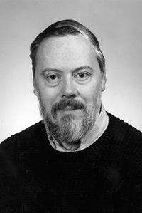

|  |
1983 год Kenneth Thompson (1943) и Dennis M. Ritchie (1941-2011) «За разработку общей теории операционных систем и в частности за создание операционной системы UNIX» |
Страна: США
Образование: Kenneth Thompson - Магистр науки в области электротехники, Калифорнийский университет (Беркли), 1966
Dennis M. Ritchie - Доктор философии в области математики, Гарвардский университет, 1968
О лауреатах
После получения образования Ritchie и Thompson присоединились к Исследовательскому центру вычислительных наук Bell Labs. В то время сотрудники этого центра имели значительную свободу в выборе тем в теории вычислений, языках, программировании и системах. Хотя с 1964 года члены этой команды участвовали в разработки системы Multics, в 1969 году Bell Labs ушла из проекта и перед учёными встала задача поиска нового направления, например, среды для вычислений с on-line сообществом, свободной от «ментальности большой системы». UNIX, первую версию которого Thompson написал в том же году, должен был предоставить такую среду. Так как UNIX мог запускаться на относительно недорогих компьютерах, даже небольшие исследовательские группы могли работать с ним, делиться идеями, а, с учётом того, что исходные коды системы шли в комплекте с ней, могли программировать и расширять функционал без формальностей бюрократии. Для UNIX Thompson разработал интерпретируемый язык B, Ritchie добавил в него типы, а позже написал компилятор для C. После этого большая часть кода UNIX была переписана на C в 1973 году.
Ключевые слова: UNIX, B, Go, UTF-8, ALTRAN, BCPL, C, Multics
Краткая библиография
| 1. |
Thompson, Ken, "Reflections on Trusting Trust", Turing Award Lecture, Communication of the ACM, Vol. 27, No. 8, August 1984, pp. 761-763. В наградной лекции авторы показали, что нельзя доверять программе, если нельзя доверять хотя бы одному инструменту, использованному при её написании. |
| 2. |
Ritchie, D. M. and K. Thompson, “The Unix Time-sharing System,” Communications of the ACM, Vol. 17, No. 7, July, 1974), pp. 365-375; also, Bell System Technical Journal, Vol. 57 Num. 6, Part 2 (July-August 1978), also, Fourth ACM Symposium on Operating Systems Principles, IBM Thomas J. Watson Research Center, Yorktown Heights, New York, October 15-17, 1973. Классическая статья, в которой представлена операционная система UNIX. |
| 3. |
Kernighan, Brian W. and Dennis M. Ritchie, The C Programming Language, Second Edition, Prentice Hall, Inc., 1988. ISBN 0-13-110362-8 (paperback), 0-13-110370-9 (hardback). Описание языка C. |